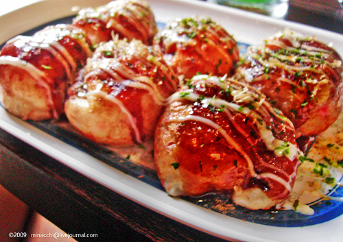

Takoyaki Recipe | たこ焼き

Description
Takoyaki is a delicious and staple street food from Osaka, Japan. Though nowadays these tasty golden dumplings can be found all over the nation.
It consists of boiled octopus grilled in a special pan using a dough to make a ball. It is then traditionally topped with bonito flakes, japanese mayo, and a special
takoyaki sauce.
I love takoyaki because of how modifiable it is. If you aren't a fan of octopus you can substitute with any filling you desire.
Once you learn how to cook takoyaki, it can be a fun and enjoyable activity. The textures of the fillings are tender, while the dough is
soft in the middle with a crisp outer layer.
Ingredients
- Boiled octopus
- Dried bonito flakes (katsuobushi)
- Red pickled ginger
- Green onion / scallion
- Tenkatsu
- Vegetable oil
- The batter:
- All-purpose flour
- Eggs
- Baking powder
- Dashi
- Soy sauce
- Kosher salt
- Toppings:
- Japanese mayo
- Takoyaki sauce
- aonori (dried seaweed)
- Pickled red ginger
- Dried bonito flakes
Instructions
- Grind the bonito flakes into a powder. Cut the scallions into fine slices, cut the octopus into bite-sized pieces, and mince the pickled ginger.
- Combine flour, baking powder, and salt in a large bowl. Add eggs, soy sauce, and dashi stock. After whisk until smooth.
- Preheat the takoyaki pan and grease the chambers with oil. Pour the batter into the chambers once hot.
- Place several octopus pieces in each chamber and sprinkle the katsuobushi powder, tenkasu, scallion slices, and red ginger mixture on top.
- Once the batter on the bottom is crisp, use skewers to break and rotate each piece 90 degrees. Continue cooking for about 4 minutes. Turn each abll again to cook each side on the grill until crisp, then remove from grill.
- Transfer the cooked balls to a plate and drizzle with takoyak isauce and Japanese mayo. Sprinkle your katsuobushi and aonori. Serve immediately and enjoy.
Home